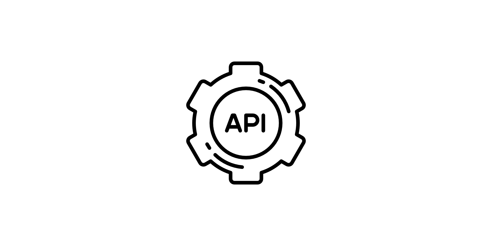
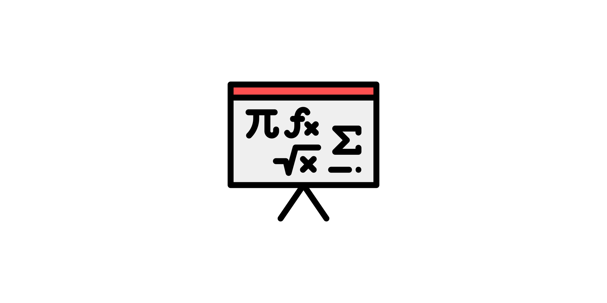

Welcome to pysolve-gn’s documentation!#
Description of the package#
pysolve-gn is a Python package designed to solve
the generalized nonlinear least squares problem using the Gauss-Newton method.
The package provides efficient algorithms for solving nonlinear optimization problems,
making it suitable for a wide range of applications in data fitting, machine learning,
and scientific computing.
These notations are used throughout the documentation.
Note
The package is designed to work with double-precision floating-point numbers to ensure
numerical stability in all calculations.
Therefore, all float arrays are automatically converted to numpy.float64 for
computation and all integer arrays are converted to numpy.int64 for computation.
This means that when you pass arrays to the functions in the package, they will be
converted to these data types if they are not already in that format.
Contents#
Installation
This section describes how to install the package into a Python environment. It includes instructions for installing the package using pip, as well as any necessary dependencies.

API Reference
The reference guide contains a detailed description of the functions,
modules, and objects included in pysolve-gn. The reference describes how the
methods work and which parameters can be used. It assumes that you have an
understanding of the key concepts.

Mathematical Background
This section provides the mathematical foundation and theoretical concepts underlying the package. It includes explanations of the algorithms, formulas, and principles used in the computations.
Examples
This section contains a collection of examples demonstrating how to use the package for various applications. Each example includes a description of the problem being solved, the code used to solve it, and the resulting output.
Credentials#
The package uses the following icons:
download.png: Flaticon - created by laterunlabs
api.png: Flaticon - created by Freepik
examples.png: Flaticon - created by Freepik
math.png: Flaticon - created by Freepik
License#
The package is licensed under the GNU General Public License v3.0 (GPL-3.0). Please refer to the [LICENSE] file for the license of the package.